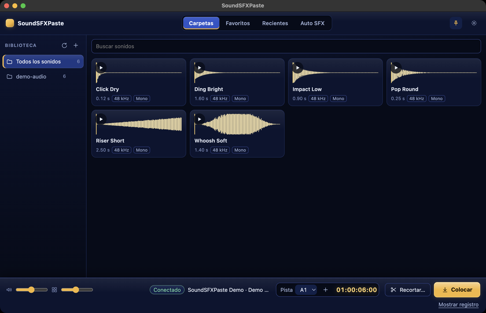

Panel para DaVinci Resolve · macOS · gratis
Encuentra el sonido. Escúchalo. Colócalo en la línea de tiempo.
Un panel de efectos de sonido junto a Resolve: forma de onda real en cada sonido, audición rápida y colocación en el cursor sobre la pista elegida, sin salir de la edición.
Versión 0.2.0 · paquete firmado y notarizado · doble clic para instalar

El flujo
- Elige la carpetaAñade tu carpeta de sonidos; el panel los lista con forma de onda y duración.
- EscuchaPasa el ratón o pulsa ▶ para una audición rápida; favoritos y recientes a un clic.
- ColocaElige la pista, mira la posición del cursor y pulsa Colocar. Los solapamientos se detienen antes de escribir.
Qué hace
Formas de onda realesCalculadas desde el archivo, no decorativas.
Destino visibleLa pista y el timecode del cursor están junto a Colocar.
Protección de solapamientosEl plan se comprueba antes y el resultado después, con reversión.
Mantener encimaEl panel puede quedarse sobre Resolve mientras trabajas.
Auto SFXRellena marcadores, sustituye clips, gestiona marcadores.
RO / EN / ESInterfaz y documentación en tres idiomas.
Instalación y requisitos
- DaVinci Resolve Studio 21 o posterior, macOS.
- Python 3 (el panel lo comprueba y muestra los pasos).
- En Resolve: Preferences → General → External scripting using: Local.
- Doble clic en el paquete y luego Workspace → Workflow Integrations → SoundSFXPaste.
Límites conocidos
- Las líneas de tiempo drop-frame se rechazan explícitamente.
- Resolve no tiene API para fijar la selección de clips; Replace usa tu selección manual.
- Arrastrar un sonido directo a la línea de tiempo no está disponible; se coloca con el botón.